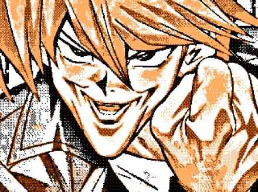
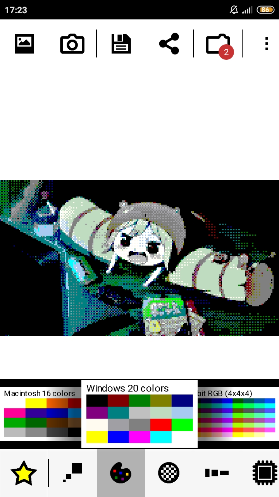
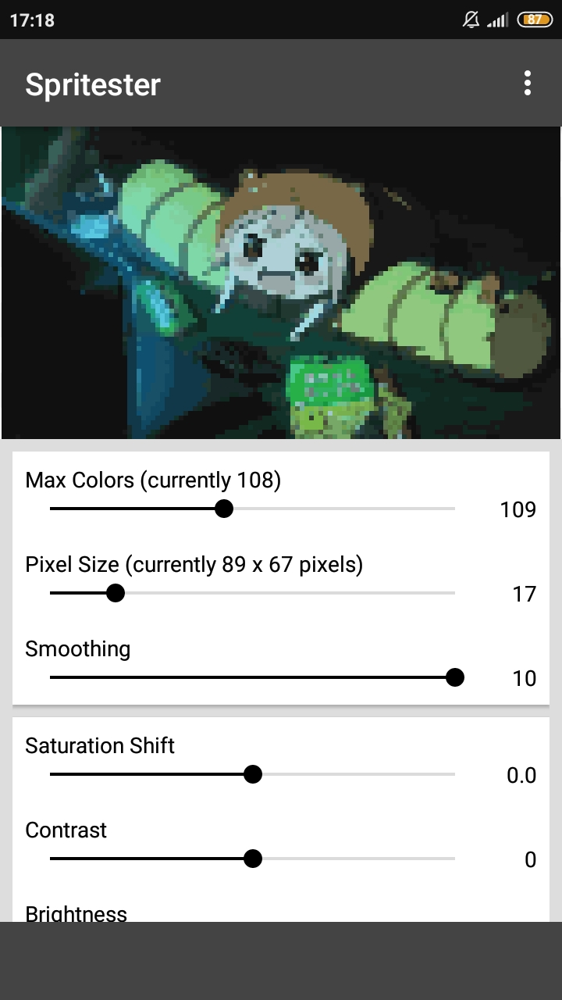

Cara Mengubah Foto atau Gambar Menjadi Pixel Art 8 Bit di Android
> by Blog Xoupedia
> Mei 02, 2022
> Edukasi
Untuk membuat gambar pixel art secara instan, kita hanya perlu membutuhkan sejumlah tool atau aplikasi yang menyediakan efek atau fitur yang memungkinkan untuk mengubah gambar dan foto menjadi pixel art. Salah satu contoh gambar yang sudah di convert menjadi pixel art atau gambar 8 bit terdapat di bawah ini. Dan dengan hasil gambar tersebut, kita dapat membuat sejumlah meme atau mungkin karya seni yang indah untuk dibagikan di medsos tentunya.

Gambar 8 bit versi gbc (gameboy color)
Gambar 8 Bit / Pixel Art
Gambar 8 bit adalah gambar yang memiliki ciri khas penampilan seperti grafik game era 80-90 an yang memiliki piksel besar. Berbentuk kotak-kotak atau mozaik, dan tidak terlalu jelas, karena keterbatasan pallet warna dan juga style retro yang digunakan.
Pixel art adalah suatu karya seni berupa gambar yang dibuat dengan bantuan aplikasi / software editing gambar dalam skala piksel. Sama seperti gambar 8 bit, grafik pixel art berbentuk kotak-kotak mozaik yang tidak begitu detail / jelas seperti halnya gambar modern yang ada.
Mengubah Gambar dan Foto Menjadi 8 Bit dengan Aplikasi 8bit photo lab, Retro effects

Tampilan menu aplikasi 8bit photo lab, Retro effects
Seperti yang terlihat diatas, didalam penampilan aplikasi 8bit photo lab Retro effects banyak sekali fitur yang sudah disediakan. Kamu langsung bisa mengconvert gambar maupun foto secara langsung dengan hanya modal tap-tap atau klik saja. Disana disediakan banyak jenis filter dan juga patern / tekstur gambar 8 bit yang memudahkan untuk digunakan.
Untuk memulai menggunakan aplikasi ini, langsung saja ikuti tata cara singkat yang tersebut di bawah ini.
- Siapkan foto atau gambar yang akan diubah menjadi gambar 8 bit. Utamakan yang bertipe jpeg, agar size gambar yang dihasilkan menjadi lebih ringan.
- Buka aplikasi 8bit photo lab, Retro effects.
- Klik gambar lukisan untuk mengambil gambar dari galeri, atau klik gambar foto untuk menangkap gambar langsung dari kamera.
- Tinggal tap-tap dan pilih berbagai filter gambar 8 bit yang sudah disediakan disana.
- Klik menu bergambar disket untuk menyimpan gambar hasil editan.
- Cek ke galeri hpmu, dan otomatis gambar 8bit hasil konvert dapat segera dinikmati.
Sangat mudah begitu saja, namun karena beberapa alasan ada beberapa fitur yang terkunci dalam aplikasi 8bit photo lab Retro effects ini. Beberapa fitur filter gambar yang ada hanya tersedia dalam versi yang pro saja.
Akan tetapi kamu tidak perlu khawatir, karena didalam versi yang free atau gratis. Sudah banyak tersedia berbagai jenis filter gambar 8 bit yang sangat banyak. Mulai dari filter gambar hitam putih versi gambar jadul, filter gambar versi konsol game atari, gameboy, gameboy color, nes, windows jadul, dll.
Mengubah Gambar dan Foto Menjadi 8 Bit dengan Aplikasi Spritester

Tampilan menu aplikasi Spritester
Yang kedua ini adalah tampilan menu aplikasi spritester di hp android. Tampilan menunya sangat sederhana dan sangat mudah untuk digunakan. Kamu hanya perlu memasukkan gambar yang akan diedit dengan menekan menu open image pada pilihan menu titik 3 dikanan atas. Dan untuk menyimpan gambar tinggal pilih menu Export image.
Dengan cara simpel diatas, kamu akan langsung mendapatkan gambar pixel art atau gambar 8 bit yang diinginkan. Dengan sedikit sentuhan drag dan drop settingan yang sudah tersedia dalam app tersebut.